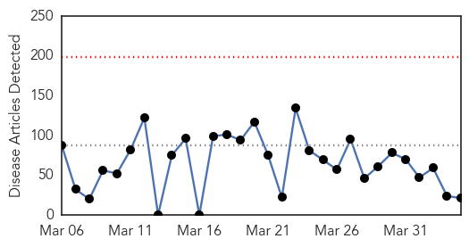
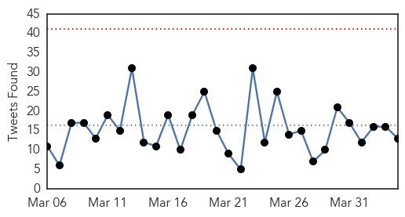
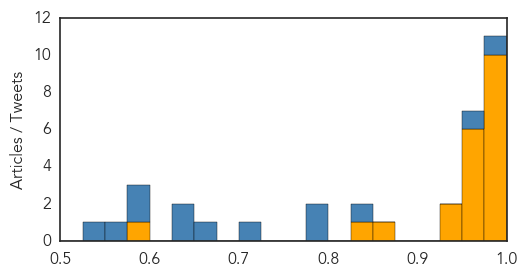

Hepatitis
30-Day Web Trend
30-Day Twitter Trend
1 alerts, 0 warnings

Article Locations
Article Confidences
Top Articles:
Top Tweets:
-
No tweets found for Apr 04, 2015
Ebola
30-Day Web Trend
0 alerts, 0 warnings

30-Day Twitter Trend
0 alerts, 0 warnings

Article Locations
Article Confidences
Top Articles:
- 1.000
- Guinea Ramps Up Fight Against Ebola as Outbreak Continues to Burn
- 1.000
- Sydney doctor tests NEGATIVE for Ebola after returning to Australia following a stint at a clinic in Sierra Leone and developing 'flu-like' symptoms
- 1.000
- #WHO medical detectives work with national health authorities to solve a mystery
- 0.998
- Man with Ebola symptoms being tested at Sydney hospital
- 0.997
- Norway adjusts its Ebola response
- 0.996
- New Ebola Vaccine Appears To Be Working
- 0.996
- Sunshine Coast GP cleared after being tested for Ebola
- 0.995
- Former FM appointed to UN high-level panel
- 0.991
- A new score for predicting Ebola risk
- 0.976
- Hospital seeks dismissal of Nina Pham's lawsuit - Story
- 0.971
- Tulane/Lassa Fever Programme hands over Rehabilitated Annex Ward to Ministry of Health
- 0.969
- Politico SL News Taiwanese Foundation to adopt eleven health facilities
- 0.962
- Goodwill Ambassador donates 40ft container OF medical supplies to fight Ebola
- 0.961
- Minister tells Sierra Leoneans in the diaspora that authorities back home have not given up on Ebola, as erroneously claimed by the New York Times
- 0.958
- 140 suspected Ebola cases since March 2014 tested negative
- 0.958
- Ebola in Dallas: Stories, videos, photos, graphics and resources from The Dallas Morning News
- 0.928
- Pakistani volunteer turns into hero for services in affected Sierra Leone
- 0.925
- Australian National University's Dr Martyn Kirk fights disease, saves lives every day
- 0.860
- GOODWILL AMBASSADOR ISATU TIMBO SENDS SUPPLIES TO SIERRA LEONE TO COMBAT EBOLA
- 0.840
- Australian National University's Dr Martyn Kirk fights disease, saves lives every day
- 0.576
- Founder, owner and CEO of Cocorioko KABS KANU wins award No .7 in Journalism
Top Tweets:
- 0.992
- RT: Woah. Strong language re: last Ebola case in Liberia "first case detected of the Ebola virus being transmitted through sexu…
- 0.971
- RT: @EbolaAlert free accessible guides 4 infection control+disease analysis fr DavidMuarana pub health specialist Ebola …
- 0.844
- Texas Health Resources files response denying Ebola nurse Nina Pham's ... - Dallas Morning News (blog) http://t.co/eOcG7ZDHZH ebola EVD
- 0.790
- Sierra Leone's Kailahun district records first Ebola case in months - Reuters http://t.co/yVqpwZp8zw ebola EVD
- 0.786
- Eastern Sierra Leone records first Ebola case in months - Reuters http://t.co/riRrnyhyW6 ebola EVD
- 0.718
- RI doctor visits Liberia explores new ways to detect Ebola - Turn to 10 http://t.co/3lsmANZ00U ebola EVD
- 0.669
- RT: RT: At start of outbreak in W Africa only 1 US lab was testing for Ebola; now there are 56 labs: ZeroCases http:/…
- 0.636
- Man with Ebola symptoms being tested at Sydney hospital - Sydney Morning Herald http://t.co/eFvfsXxYGC ebola EVD
- 0.636
- Man with Ebola symptoms being tested at Sydney hospital - Sydney Morning Herald http://t.co/RIdOCudeia ebola EVD
- 0.594
- Pakistani social worker becomes hero in Ebola-hit Sierra Leone - The Express Tribune http://t.co/Ze6CBvWuzX ebola EVD
- 0.582
- Portion of Barrie hospital closed due to possible Ebola case: police - CP24 Toronto's Breaking News http://t.co/h0X2FOSfol ebola EVD
- 0.552
- 185 contacts associated with last Ebola case in Liberia are being monitored and heightened vigilance is being maintained. EbolaResponse
- 0.533
- Hopkins builds unit designed for Ebola patients - Baltimore Sun http://t.co/eNrToEqtSx ebola EVD